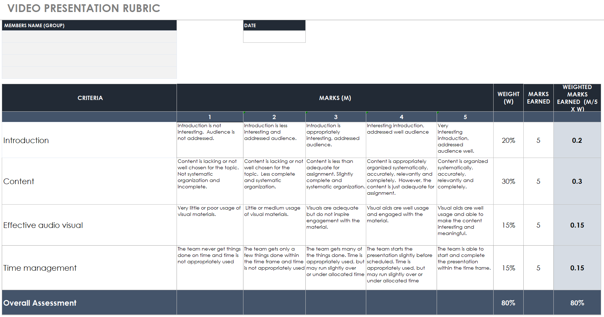
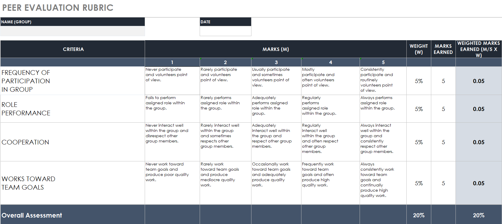

Grooup Assignment
MAT112
SUBMISSION
DURATION: WEEK 9 - WEEK 11
DUE DATE: 7 JANUARY 2023 (SATURDAY, BEFORE 5PM)
CHAPTER:
C6: Annuity
C7: Trade & Cash Discount
INSTRUCTIONS TO CANDIDATES:
Set up a group that consists of maximum FOUR (4) members.
This group project consists of TWO (2) questions (40 marks).
Video Presentation Guidelines:
You should prepare a video presentation with duration 6–10 minutes. (Suggestions: You can voice over the Powerpoint video/powtoon/sparkol videoscribe/canva or any other creative methods of presentation).
The video should not be more than 10 minutes length.
All information on the first slide of your presentation must consists of:
- the title of assignment (Annuity and Trade & Cash Discount),
- names & photo of leader and all members,
- student ID
- group (example: KAC1101A)
- the title of assignment (Annuity and Trade & Cash Discount),
All presentations must be in English.
Audio commentary and all information on the slides must be clearly presented.
Please send/upload your video according to the platform used by your lecturer such as Google Classroom, UFUTURE or others. Rename your video as leader’s name and class (example: NAME_KAC1101A)
Deadline for video submission: 6 Jan 2023, before 5 pm.
You can find some useful tips for your presentation in the following links:
For Giving Effective Virtual Presentations (written by Matt Abrahams)
How to create voice-over narration for your PowerPoint Presentation (By Dawn Dubriel)
Video Presentation Scoring Rubrics:
- 60% Video Presentation
- 40% Case Study
View Scoring Rubric
Thanks for your cooperation.
MAT402
Group Assignment: Annuity in practices
Submission
The assignment must be submitted into Google Drive folder assigned by your instructors before 31.12.2022. Failing to comply with the deadline given will result in deduction of marks.
Preparation
Set up a group that consists of maximum FOUR (4) members. In your lessons on Annuity, you learned the meaning of annuity, types, and the formulae of calculating annuities. In this assignment, you are required to make a short video (3 - 5 minutes) on how annuities are practiced in real life. You are encouraged to do research using Internet resources. You may use questions from the past semester final examination for creating problem solving process in annuity.
Grading
Your assignment will be graded using the Video Presentation (80%) and Peer Evaluation (20%) Rubrics. Please review and keep it in mind as you prepare your presentation, each component is weighted as follows:
20% Introduction
Introduction is interesting and addressed audience well.
30% Content
Content is organized systematically, accurately, relevantly and completely.
15% Effective Audio Visual
Visual aids are well usage in order to make presentation more interesting and meaningful.
15% Time Management
The presentation is able to start and complete within the time frame (3 - 5 minutes).
Rubric Guidelines


20232 Task
Group Project Assignment: Annuity in the Context of Buying a House
Objective: The objective of this group project assignment is to apply the concept of annuity to a real-life situation, specifically the process of buying a house. By exploring various aspects of annuity, such as calculations, decision-making, and financial planning, students will gain a deeper understanding of how annuity can be practically applied in the context of personal finance.
Task Description:
1. Group Formation:
a. Form a group of four members.
b. Ensure each group member actively participates and contributes to the project.
- Real-Life Situation Selection:
- Research and identify a specific town or city in which your group will base your project.
- Choose a real-life situation related to buying a house in the selected town or city.
- The situation should involve various financial considerations, such as mortgage loans, down payments, interest rates, and the concept of annuity.
- Research and identify a specific town or city in which your group will base your project.
- Problem Identification and Analysis:
- Clearly define the problem your group aims to address within the chosen real-life situation.
- Analyze the financial aspects involved in buying a house, emphasizing the relevance of annuity in this context.
- Highlight the importance of understanding annuity calculations and their implications for long-term financial planning.
- Clearly define the problem your group aims to address within the chosen real-life situation.
- Solution Development:
- Propose a comprehensive solution to address the identified problem.
- Demonstrate how annuity can be utilized effectively in the solution.
- Consider various factors, such as loan terms, interest rates, repayment schedules, and the impact of annuity payments on financial stability.
- Propose a comprehensive solution to address the identified problem.
- Presentation Report:
- Prepare a video presentation report that covers the entire project.
- The video presentation should be between 3 to 5 minutes in length.
- Use visual aids, graphics, and examples to enhance the clarity and effectiveness of the presentation.
- Ensure the report includes the following sections:
- Introduction to the chosen town/city and the real-life situation.
- Problem statement and its significance.
- Explanation of annuity and its relevance to the situation.
- Presentation of the proposed solution, incorporating annuity calculations.
- Analysis of the potential outcomes and benefits of the solution.
- Conclusion summarizing the key findings and lessons learned.
- Proper referencing of sources used for research.
- Introduction to the chosen town/city and the real-life situation.
- Prepare a video presentation report that covers the entire project.
- Submission:
- Submit the video presentation report to the lecturer according to the specified deadline. Tentative date: July 3, 2023.
- Ensure the video file is easily accessible and viewable.
- Submit the video presentation report to the lecturer according to the specified deadline. Tentative date: July 3, 2023.
Evaluation Criteria: (Refer to Rubric)
The group project will be assessed based on the following criteria:
- Clarity and coherence of the presentation report.
- Accuracy and depth of the problem analysis.
- Application and understanding of annuity concepts.
- Thoroughness and viability of the proposed solution.
- Creativity and originality in the presentation approach.
- Quality of the video presentation, including visual aids and organization.
- Collaboration and active participation of all group members.
Note: Encourage students to engage in research, critical thinking, and problem-solving throughout the project. Emphasize the importance of effectively communicating their findings and solutions in the video presentation report.